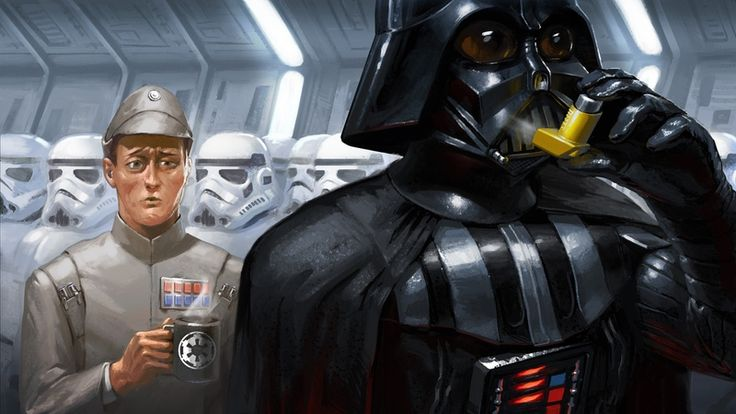

I'm a ... ( the quick summary ... )
Software engineer, teacher, and carpenter. In each of these disciplines, I
find it incredibly useful to place high value on planning careful and efficient progressions, utilizing
holistic analysis to problem-solve errors, communicating in clear, energetic, and empathetic ways, and
engaging in regular supplemental self-teaching to hone my own execution. I am deeply curious, creative,
collaborative, reliable, and teachable, which makes me more than excited to tackle the next project.
Never Not curious something something
When I was three, apparently I was contemplating the soul, and asked mom, "Where do we go when we die?" She answered, "The Earth", in a valiant attempt to table things until I'd ?gotten a masters? It bought her two weeks: I followed-up, "But then what about our thoughts and feelings?"
When I was six I cut the cord of the plugged-in clothing iron … possibly because I wanted to understand the nature of electrical current … or because
"To cut, or not to cut?
…
Ask for forgiveness later"
…
Ask for forgiveness later"
A Cyclical Life of Art and Computers something something
My mother was a painter for 30 years. While very talented, she struggled (as many do). I, in turn, chose to avoid any kind of artistic outlet in favor of video games and essay writing. Once I'd been an adult for long enough to think critically about what I'd played growing up, I wondered - "How do they make these games? How do these models? Why do some look SO good??" Determined to figure it out, I started learning 3D art and modeling - almost seven years ago, now. The software had obtuse, almost impenetrable UI's, and the terminology was frustratingly niche - but I taught myself anyway. And then, when COVID hit, I (like many others) decided it was as good a time as any to switch careers and try to learn computer coding in earnest.
Tell me all the things somethin something
I know it's painfully common for newly-minted bootcamp grads to say you "like everything", and I expect that to change as I get more acquainted with the world of coding. But so far, I really do love learning about it all: networking, cybersecurity, AI - these are absolutely fascinating fields with rich, meaningful challenges to solve. Meantime, I can say how I feel about the fields I am familiar with:
- Front-end design should involve consistent, brand-conscious aesthetics, build-upon prior user knowledge rather than demand they re-learning from scratch, and get people immediately into what they bought the product for.
- Back-ends should be efficient, secure, and orderly.
- Databases should continue to produce business insights rather than grow cluttered and frustrating
(The "Six P's" are words to live by).
I'm exposing myself to as many languages, architectures, and sub-disciplines as I can. I want to know how they all connect, and they're going next.
Roadmap:
Tighten algorythms in ruby (complete back-logged practice exercises)
Review SQL search, tables & alternate formulations (NoSQL etc)
Dust-off python (recreate weekly bootcamp exercises for compare-contrast)
Poke around C++ (small game in UE4 to make learning engaging)
My Top 10 Games List
Obviously,
This is the reason you're here ...
- SOMA
- Mass Effect
- Firewatch
- Disco Elysium
- Alien: Isolation
- The Stanley Parable
- Dishonored
- Prey
- X-Com
- The Last of Us
(with the monsters "turned off")
It's one of the few games that actually gets you to experience a profound philosophical question: "Are you your body? Or is your body just a vessel?"
Games don't make me cry. ME3 did when Mordin died .. Never saw it coming … And then I cried over the gawd-awful ending (yeah - I'm one of *those* ME fans)
I felt longing and terror in a game that masterfully utilized the power of dialogue … Tell me who I gotta sit under to learn how to tell stories like that?!
Again, who do I have to hang with to get these kinds of ideas?! The internal landscape of a character made manifest through psychological embodiments.
This is what games taken from other source material should be like. If I could, I'd spend another 40 hours soaking up the rich recreation of the world that SEGA achieved.
I mean, you know why. It's brilliant subversion of player expectations, wickedly witty, and … a shame the dev hasn't made more?
The art and world-building … I mean, the Clockwork Mansion level???? BRILLIANT!
I miss you Arkane. Make more awesomeness. Please.
I'm not sure there's a game with tighter, more resonant loops for me. The more I've researched the game design, the more I'm amazed at what they've produced.
Probably the closest thing to a cherished novel I want to re-read every few years.
Honorable Mentions:
The beginning of Alan Wake,
Far Cry 5,
Dying Light,
the beginning of State of Decay,
Subnautica